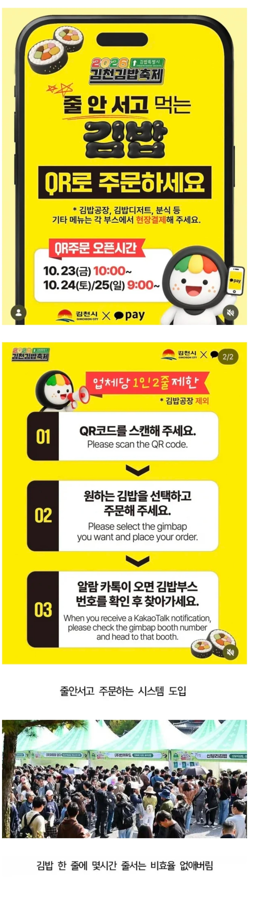

저런 센스 참 좋다

저런 센스 참 좋다
저기는 모르겠는데 락페도 저런 시스템 도입 되어 있는데
사람 몰려서 인터넷 안터지거나 자체 서버 씹망이라서 조지는 경우들 있어서
빡치는 일이 좀 많음
예산 편성 더 크게해줬다하니 그런사태는 막지않을까
사람 몰이면 인터넷 안터지더라....
전화 자체가 안터지더라 ㅋㅋㅋ
10년 전쯤에 영남대에 싸이 왔었을 때 전화가 아예 안됐음 ㅋㅋㅋ
브루노마스콘서트 잠실주경기장에서도 인터넷 개느렸었음ㅋㅋ
나도 경험함 ㅋㅋ
한강 드론라이트쇼 축제도 안터지더라
어쩐지 임영웅 콘서트 가니까 안터지더라니
갈수록 너무 많은 사람들이 몰려다닌다 진짜
너무 이벤트 행사 인플루언서의 말 같은거에 휘둘려다님
ㄹㅇ 그런거 너무 불쾌하고 싫음.. 점점 개인의 선택과 개성이 없어지는 느낌
지역상권도 행사하면 더 좋아질거 같지만 막상 딱 행사자리만 인파가 몰리고 한블럭만 벗어나도 평소보다 더 조용함
어제만해도 아는 동생 가게 옆 공원에 작은 행사열렸는데 동생은 사람은 많이 지나가는데 장사 공쳤다고 전화옴
난 반대로생각함
모든 미디어나 놀거리가 너무 개인화되다보니 이런 큰건에 대한 열망? 같은게 커지는거 아닌가 싶음
옛날엔 무도냐 일박이일이냐로 파가 나뉘고 둘다 아니어도 저런게 있단건 알았는데
지금은 하도 알고리즘으로 개인화되다보니 살면서 처음보는 유튜버가 100만구독인 세상이잖아
개인화된 사회에서 같이즐기고자 하는게 터지다보니 이렇게 몰린다고 봄
통신사 중계차도 몇대씩 불러놨겠지?
와이파이로는 절대 감당 못해서 통신사에서 탱킹해줘야 굴러갈텐데
답은 스타링크다
저런환경은 스타링크가 더 불리하지
증설을 못하니까
스타링크는 저 좁은동네에 10만명 몰리는게 감당됨? 더 빨리 터질거 같은데
왜 줄 안서고 김밥 주문하기 체험이 아닌거지? 섬바리한테 좀 배워야할듯
저번에 하닉 땡스풀데이 푸드트럭이 저랬는데 좋더라
김천은 저 축제 생각한사람한테 매출의 %로 인센티브 줘야함 ㅋㅋㅋㅋ
진짜 축제들 이런거 도입 필수임.. 줄서는거 ㅈ같음
어디가 몰리는지 확인하기도 편할거 같네
이제 활성화 잘되면 "집에서 즐기는 김밥축제!" 로 365일 택배로 김밥 받는 시대가 시작되는건가??
김천 많이 흥해서 지역 부흥에 도움 많이 됐으면 좋겠네
오 괜찮네 ㅋㅋㅋㅋㅋㅋㅋ 물론 불러도 안오는 사람이 많을 거 같긴 한데 줄서는 것 보다는 낫지
저러면 김밥 한줄 아침 11시에 주문해서 오후 4시에 받는다
이번에 행궁동 꼬치페스타 갔는데 첫날에 엄청 몰리고 이틀째부터는 그냥 줄세움
기술도입의 좋은 예